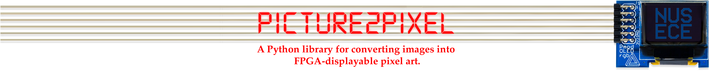
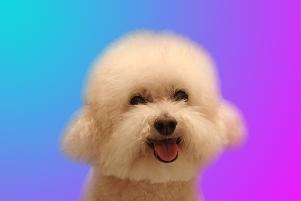
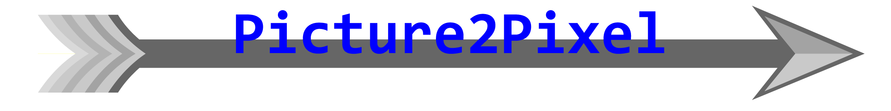

Picture2Pixel V2.0 launched on December 6, 2024 at 23:59 UTC.
Picture2Pixel is an open-source Python library designed to transform images into pixel art that can be displayed on FPGA-driven OLED screens. By employing advanced computer graphics techniques, this library preprocesses images to minimize distortion during the pixelation process. The resulting artwork is expressed as combinations of predicate logic in Verilog language, ensuring compatibility with FPGA technology. This optimization not only enhances display efficiency on OLED screens but also reduces energy consumption, making it ideal for developers looking to integrate low-power, high-efficiency visual displays into their hardware projects.
Picture2Pixel can convert both single images and batches of images, including GIFs, into formats suitable for FPGA OLED displays. Below are some of our demos:
| Image to Pixels | ||
 |
 |
|
| GIF to Pixels | ||
Tutorial
Detailed Python and Verilog tutorials, including examples, help developers achieve FPGA display effects similar to the demos above.
For more information, please view our online tutorial.
Project Wiki (MUST READ!)
We have created a comprehensive Wiki for the Picture2Pixel project, which includes development documentation, tutorials, and examples to help developers deploy and use the library, including function descriptions and technical standards to facilitate further development of our Python library:
Project Objective
The primary objective of the Picture2Pixel project is to enhance visualization using the Pmod OLED for the EE2026 course. Programming the OLED screen can be exceptionally challenging for students due to its limited resolution and the complexity of assigning RGB values to each LED. To improve students' efficiency and allow them more time to focus on designing finite state machines, game logic, and other advanced functions, Picture2Pixel was developed to automatically convert images into Verilog code. This enables EE2026 students to create more complex and impressive FPGA programs.
The project is divided into two main parts: image preprocessing and image conversion. We recognize that natural images are too complex to be displayed effectively on a small OLED screen and that human perception varies significantly across different RGB light sensitivities. Therefore, we preprocess images to optimize their display performance before conversion. During the conversion phase, we employ a convolutional network to minimize distortion when converting RGB data. Furthermore, we have optimized the predicate logic to reduce redundancy. Here is a flow chart to introduce how Picture2Pixel does the above steps for you:

Verilog code for the colorDog picture above (click to expand; it is very loooooong!)
Loading colorDog_example.v...Project Team
Hover over or click on our profiles to pixelize or depixelize them.
| Dr. Chua Dingjuan | Chen Guoyi | Fang Sihan | Chen Cola |
| Supervisor | ECE Student | ECE Student | Guoyi's Pet |
Welcome to uncovering the story behind the Picture2Pixel Python Library project!